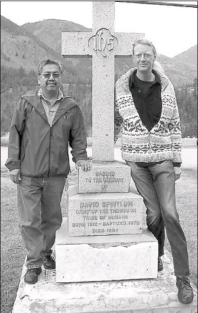

Take me to the River!
Nlaka’pamux traditional territory is rich in gold.
In spring of 1858, there were reports of gold found at Nicomen river near Lytton, BC or known as The Forks back then.
The gold rush was a huge part of British Columbia’s history with the Nlaka’pamux people. As a result of conflict with gold miners there was what is called the Fraser Canyon War in the summer of 1858. The miners and Nlaka’pamux people waged war until there was a resolution between Chief David Sexpínlhemx (Spintlum) and Capitan Henry Snyder on August 22, 1858.
To this day the great work of Chief Spintlum is memorialized by a monument near the Lytton Anglican Parish Hall and the new bridge that spans across the Thompson River is named after Chief Spintlum.
Pictured above is former Chief Byron Spinks and Daniel Marshall by the Chief Spintlum Memorial, Lytton BC 2007
To learn more about the Fraser Canyon War and the BC Gold Rush:
"Claiming the Land" by Daniel Marshall (Book, 2018)